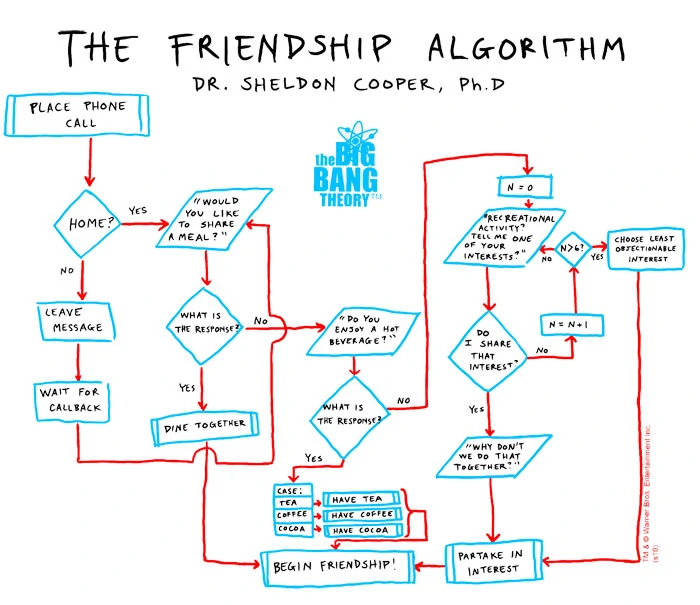

Thinking Like a Programmer: Logic, Flowcharts & Pseudocode
The real challenge of programming isn't learning a language's syntax—it's learning to creatively and logically solve problems. At its core, programming is about problem-solving: thinking logically and breaking down complex tasks into step-by-step solutions.
Many beginners approach a programming challenge by immediately typing random code, guessing at solutions without much structure. If that attempt fails, they try another random tweak until it works or they give up. While you might get lucky occasionally, this trial-and-error approach is inefficient, frustrating, and error-prone. To avoid this trap, software engineers follow a structured system: Identify, Plan, Break-Down, Solve, and Test.
The 5-Step Problem Solving Framework
1. Identify
It is impossible to solve a problem if you don't fully understand what is being asked. Before writing a single line of code, make sure you understand the goal. A classic indicator of true understanding is whether you can explain the problem in layman's terms to someone else.
Programmers use many techniques to clarify problems: drawing diagrams, talking through logic with a peer, or even using "rubber duck debugging"—explaining the logic line by line out loud to an inanimate object. Anything that forces you to analyze the problem from multiple angles will help reveal hidden assumptions.
2. Plan
A common mistake made by new programmers is diving straight into code. While experienced developers might quickly sketch solutions mentally based on past projects, formal planning remains standard industry practice. Tools like flowcharts, storyboards, UML diagrams, and pseudocode help model system behavior before implementation starts.
3. Break-Down (Decomposition)
Once you understand the problem and have a high-level plan, break the problem down into smaller subproblems. Continue reducing each part until you reach manageable tasks that you know how to solve immediately. Each subproblem should be self-contained and independently testable.
The "Reduce the Problem" Technique:
"If I could teach every beginning programmer one problem-solving skill, it would be the 'reduce the problem technique.' Suppose you're asked to write a program that reads ten numbers and figures out which number is the third highest. If you're stuck, reduce the problem to something simpler: find the highest number overall, or find the larger of just two numbers. Reduce the problem to the point where you know how to solve it, write that solution, then expand it back out step by step." — V. Anton Spraul
4. Solve
With a clear understanding, a high-level plan, and decomposed subproblems, you are ready to write code. Solve the smallest components first, then combine them to build the complete program.
5. Test
Generating an output does not guarantee it is correct. Programmers test their code against typical inputs, edge cases, and unexpected user behaviors. Remember: problem-solving is iterative. If testing reveals a flaw in your logic, you will return to the planning or breakdown steps to refine your approach before updating your code.
Flowcharts

A flowchart is a visual diagram that depicts a process, system, or computer algorithm. Flowcharts document, plan, and communicate complex logic using standard shapes connected by arrows that indicate direction and sequence.
Standard flowchart symbols include:
- Oval / Pill (Terminator): Represents the Start or End point of a process.
- Rectangle (Process): Represents an operational action, calculation, or data manipulation (e.g.,
SET total = total + 1). - Diamond (Decision): Represents a conditional question with multiple exiting paths (typically "Yes/No" or "True/False").
- Parallelogram (Input/Output): Represents receiving input from a user or displaying output to a screen/file.
- Arrows (Flow Lines): Connect the shapes to establish execution order.
Pseudocode
Pseudocode (literally "fake code") is an informal, human-readable method for planning algorithms. It allows you to outline a program's sequence and logic without worrying about language-specific syntax, missing semicolons, or matching brackets.
Why Use Pseudocode?
- Improves Readability: Focuses purely on logic so anyone—including non-programmers—can understand the solution.
- Eases Code Construction: Translating clean pseudocode into concrete code (Python, Java, JavaScript) becomes quick and direct.
- Early Bug Detection: Catching flaws in logic on paper saves time compared to debugging complex code errors later.
Formatting Conventions for Pseudocode
While pseudocode has no strict syntax compiler rules, following consistent conventions keeps your logic organized and easy to follow:
- UPPERCASE Keywords: Write structural command words in all caps to make control flow stand out (e.g.,
IF,ELSE,FOR EACH,WHILE,OUTPUT,SET). - Indentation: Indent any code that belongs inside a conditional block or loop structure.
- Descriptive Naming: Use clear variable and function names with standard casing like
camelCaseorPascalCase. - Omit Syntax Overhead: Leave out language-specific punctuation like semicolons, curly braces
{}, or explicit variable types.
Pseudocode Examples
Example 1: Basic Decision Logic
SET dayOfWeek to current day
IF dayOfWeek is "Monday"
PRINT "Where's my coffee??"
ELSE IF dayOfWeek is "Wednesday"
PRINT "HUMP DAY!!!"
ELSE IF dayOfWeek is "Friday"
PRINT "Happy FriYAY!"
ELSE
PRINT "Just another day!"
END IFExample 2: Evaluating Criteria with Math Operators
// Determine if a student passed a course
// A passing grade is 60 or higher
SET studentGrade to current student's score
IF studentGrade >= 60
PRINT "Passed"
ELSE
PRINT "Failed"
END IFExample 3: Iteration and Aggregation
// Calculate the class average score
SET total to 0
SET studentCount to 0
FOR EACH grade IN classGrades
SET total to total + grade
SET studentCount to studentCount + 1
END FOR
SET classAverage to total / studentCount
PRINT classAverageConclusion Questions
Answer the following questions to consolidate your understanding of problem-solving methods, flowcharts, and pseudocode.
- Beyond computer science, how can structured problem-solving and "thinking like a programmer" apply to challenges in everyday life or other academic subjects?
- Create a flowchart for a process of your choice. Your flowchart must include at least one decision symbol (diamond), one process symbol (rectangle), and one input/output symbol (parallelogram). (Free flowcharting tools like Lucidchart or Draw.io can be used to generate your chart.)
- Write pseudocode for an outdoor activity advisor program: If the weather is nice, advise playing outside; otherwise, advise playing inside.
- Write step-by-step pseudocode for making a peanut butter and jelly sandwich. Assume all ingredients and utensils are on the table in front of you. Pay special attention to explicit sequencing and conditional steps!